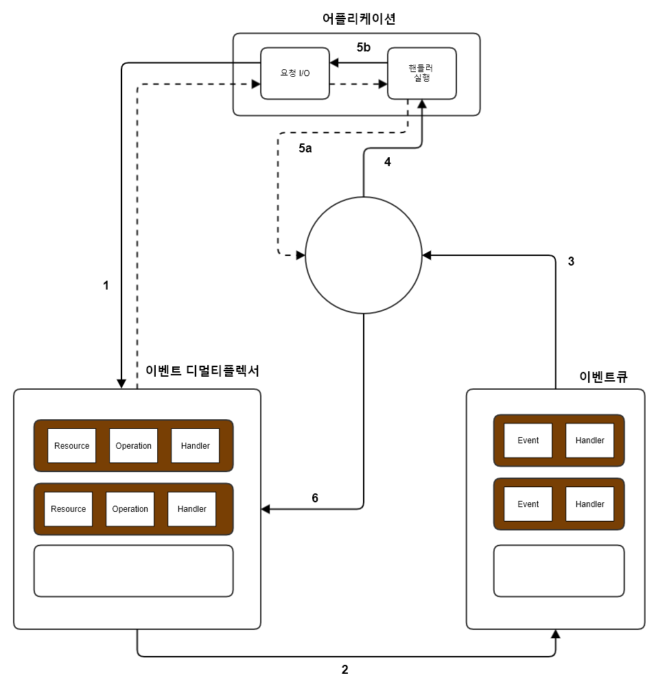

-
목록
Node JS
Node JS - Reactor전통적인 블로킹 I/O 프로그래밍에서는 I/O 요청에 해당하는 함소 호출은 작업이 완료될 때 까지 스레드의 실행이 차단됩니다. 블로킹 I/O를 사용하여 구현된 웹서버가 동일한 스레드에서 여러 연결을 처리할 수 없다는 것은 자명하다. 각 소켓에서의 모든 I/O 작업이 다른 연결 처리를 차단할 것이기 때문입니다. 이러한 이유로 웹 서버에서 동시성을 처리하기 위한 전통적인 접근 방식은 처리해야하는 각각의 동시 연결에 대해 새로운 스레드 또는 프로세스를 시작하거나 풀에서 가져온 스레드를 재사용 하는 것입니다.블로킹 I/O 외에도 대부분의 최신 운영 체제는 논 블로킹 I/O라고 하는, 리소스를 액세스하는 또 다른 매커니즘을 지원합니다. 시스템 호출은 데이터가 읽히거나 쓰여질때까지 기다리지 않고 즉시 반환됩니다. 호출하는 순간에 결과를 사용할 수 없는 경우, 이 함수는 단순히 미리 정의된 상수를 반환하여 그 순간에 반환할 수 있는 데이터가 없음을 나타냅니다.
일단 자원이 논 블로킹 모드에 있으면 자원에 읽을 준비가 된 데이터가 없을 경우, 모든 읽기 조장은 코드 EAGAIN을 반환하여 실패를 알립니다.
논 블로킹 I/O에 엑세스하는 가장 기본적인 패턴은 실제 데이터가 반환될 때 까지 루프 내에서 리소스를 적극적으로 폴링(poll)하는 것입니다. 이것을 busy-waiting이라고 합니다.resources = [socketA, socketB, socketC]; while(!resources.isEmpty()){ for ( i = 0; i < resources.length ; i ++){ resource = reources[i]; // 읽기를 시도합니다. let data = resource.data(); if(data == NO_DATA_AVAILABLE) // 당장 읽을 데이터가 없습니다. continue; if(data == RESOURCE_CLOSED) // 데이터 리소스가 닫혔기 대문에 , 리소스 목록에서 제거합니다. resources.remove(i); else // 데이터를 도착하여 이를 처리합니다. consumeData(data); } }Busy-waiting은 논 블로킹 리소스를 처리하기 위한 이상적인 기술은 아니지만 다행스럽게도 대부분의 최신 운영체제는 효율적인 논 블로킹 리소스 처리를 위한 기본적인 메커니즘을 제공합니다. 이 메커니즘을 동기 이벤트 디멀티플렉서 또는 이벤트 통지 인터페이스라고 합니다. 이 구성요소는 감시된 일련의 리소스들로부터 들어오는 I/O 이벤트를 수집하여 큐에 넣고 처리할 수 있는 새 이벤트가 있을 때까지 차단합니다.// Event Loop 방식 socketA, pipeB; watchedList.add(socketA, FOR_READ); watchedList.add(pipeB, FOR_READ); while(events = demultiplexer.watch(watchedList)) { //이벤트 루프 foreach(event in events){ // 여기서 read는 블록되지 않으며 비어 있을지언정, 항상 블록되지 않습니다. data = event.resource.read(); if(data === RESOURCE_CLOSED) // 리소스가 닫혔기 때문에, 리소스 목록에서 제거합니다. demultiplexer.unwatch(event.resource); else // 실제 데이터가 도착하여 이를 처리합니다 consumeData(data); } }

위의 이미지는 동기 이벤트 디멀티 플렉서 및 논 블로킹 I/O를 사용하여 단일 스레드 어플리케이션에서 동시성이 작동하는 방식을 이해하는 데 도움이 될 것입니다. 하나의 스레드만 사용하더라도 다중 I/O 사용 작업을 동시에 실행할 수 있는 능력을 손상 시키지 않습니다. 작업은 여러 스레드로 분산되지 않고 시간에 따라 분산됩니다. 이는 이미지에 명확하게 표시된 것처럼 스레드의 유휴 시간을 최소하하는 장점이 있습니다. 하나의 스레드만을 갖는다는 것은 프로그래머가 일반적으로 동시성에 접근하는 방식에 유익한 영향을 미칩니다.
- 어플리케이션은 이벤트 디 멀티 플렉서에 요청을 전달함으로써 새로운 I/O 작업을 생성합니다. 또한 어플리케이션은 처리가 완료될 때 호출될 핸들러를 지정합니다. 이벤트 디멀티플렉서에 새요청을 전달하는 것은 논 블로킹 호출이며, 즉시 어플리케이션에 제어를 반환합니다.
Node.js 어플리케이션은 이벤트 디멀티 플렉서에 더 이상 보류 중인 작업이 없고, 이벤트 큐에서 더이상 처리할 이벤트가 없을 때 자동으로 종료합니다.각 운영체제에는 Linux의 epoll, Mac OS X의 kqueue 및 Windows의 I/O Completion Port (API)와 같은 이벤트 디 멀티 플렉서에 대한 자체 인터페이스가 있습니다.
Unix 에서 일반 파일 시스템의 파일은 논 블로킹 동작을 시물레이션 하려면 이벤트 루프 외부에 별도의 스레드를 사용해야 합니다. 서로 다른 운영체제에서 발생하는 이러한 불 일치 때문에
이벤트 디 멀티 플렉서에 대한 보다 높은 수준의 추상화를 필요로 합니다.
libuv는 기본 시스템 호출을 추상화하는 것 외에도 Reactor 패턴을 구현하고 있으므로 이벤트 루프를 만들고, 이벤트 큐를 관리하며, 비동기 입출력 작업을 싱행하고, 다른 유형의 작업을 큐에 담기위한 API들을 제공합니다.- libuv와 기타 낮은 수준의 기능들을 JavaScript에 랩핑하고 사용 가능하도록 해주는 바인딩 세트
- V8, 이것은 원래 Google에서 Chrome 브라우저 용으로 개발한 Javascript 엔진입니다. 이것이 Node.js가 매우 빠르고 효율적인 이유 중 하나입니다. V8은 혁신적인 설계와 속도 그리고 효율적인 메모리 관리로 높은 평가를 받고 있습니다.
- 상위 수준의 Node.js API를 구현하고 있는 코어 JavaScript 라이브러리(노드 코어라고 함)
콜백은 작업 결과를 전달하기 위해 호출되는 함수이며, 비동기 작업을 처리할 때 반드시 필요합니다. 콜백을 구현하는 또 다른 이상적인 구조는 클로저입니다. 클로저를 사용하면 실제로 함수가 작성된 환경을 참조할 수 있습니다.
연속 전달 방식(The continuation-Passing Style)
Javascript에서 콜백은 다른 함수에 인수로 전달되는 함수이며, 작업이 완료되면 호출됩니다. 함수형 프로그래밍에서 결과를 전달하는 이러한 방식을 연속 전달 방식이라고 합니다.function add(a, b, callback){ callback(a + b); }
비동기 연속 전달 방식
function additionAsync(a, b, callback) { setTimeout(() => callback( a + b), 100); } console.log('before'); additionAsync(1,2, result => console.log('Result: ' + result)); console.log('after');
비 연속 전달 방식의 콜백
함수에 콜백 인자가 있으면, 함수가 비동기 식이거나 연속 전달 스타일을 사용한다고 가정할 수 있습니다.const result = [1, 5, 7].map(element => element - 1); console.log(result);-
동기냐? 비동기냐?
예측할 수 없는 함수const fs = require('fs'); const cache = []; /* unleashing Zalgo : 예측 할 수 없는 함수를 풀어놓는 것을 이야기 한다. - Zalgo : 불길한 존재에 대한 인터넷 상의 전설 이 함수는 fs.readFile() 함수가 결과를 반환할 때까지 캐시가 설정되지 않은 경우 비동기식으로 동작하고, 캐시에 이미 있는 파일에 대한 모든 후속 요청에 대해 동기식으로 변해 즉각적으로 콜백을 호출하므로 위험합니다. 예측할 수 없는 함수를 사용하면 어플리케이션이 쉽게 손상될 수 있습니다. */ function inconsistentRead(finalname, callback){ if(cache[filename]){ // 동기적으로 호출됨 callback(cache[filename]); } else { // 비동기 함수 fs.readFile(filename, 'utf8', ( err, data) => { cache[filename] = data; callback(data); }); } } function createFileReader(filename){ const listner = []; inconsistentRead(filename, value => { listners.forEach(listner => listner(value)); }); return { onDataReady : listner => listners.push(listner) }; } // 아래의 코드에서 reader2에 대한 콜백은 로그 상에서 호출되지 않습니다. // inconsistentRead 함수의 콜백 동작은 실제로 호출 빈도, 인자로 전달되면 파일명 및 파일을 읽어들이는데 걸리는 시간과 같은 여러 요인에 의해 달라지므로 실제로 예측할 수 없습니다. const reader1 = createFileReader('data.txt'); reader1.onDataReady(data => { console.log('First Data Call : ' + data); // ... 잠시 후 동일한 파일에 대해 다시 읽기를 수행합니다. const reader2 = createFileReader('data.txt'); reader2.onDataReady(data => { console.log('First Data Call : ' + data); }); });
순수한 동기식 함수에 대해서는 직접스타일(연속전달방식)을 사용하세요.
// 동기 API의 활용 /* 동기 API는 이벤트 루프를 블록하고 동시 요청을 보류합니다. JavaScript 동시성 모델을 깨뜨려서 전체 어플리케이션 속도를 떨어뜨립니다. 어플리케이션이 동시 요청을 처리하는데 영향을 주지 않는 경우에믄 블로킹 API를 사용하십시오. */ const fs = require('fs'); const cache = {}; // 아래의 함수는 연속 전달 방식으로 정리되었다. function consistenReadSync(filename){ if(cache[filename]){ return cache[filename]; }else{ cache[filename] = fs.readFileSync(filename, 'utf8'); return cache[filename]; } }
지연 실행 inconsistentRead 함수를 수정하는 또 다른 방법은 완전히 비동기로 만드는 것입니다. 여기서 트릭은 동기 콜백 호출이 동일한 이벤트 루프 사이클에서 즉시 실행되는 대신 "가까운 미래에" 실행되도록 예약하는 것입니다.const fs = require('fs'); const cache = {}; function consistentReadAsync(filename, callback){ if(cache[filename]){ process.nextTick(() => callback(cache[filename])); }else{ // 비동기 함수 fs.readFile(filename, 'utf8', (err, data) => { cache[filename] = data; callback(data); }); } }
코드의 실행을 지연시키는 또 다른 API 는 setImmediate()입니다. process.nextTick()으로 지연된 콜백은 다른 I/O 이벤트가 발생하기 전에 실행되지만, setImmediate()은 이미 큐에 있는 I/O 이벤트 들의 뒤에 대기하게 됩니다. process.nextTick()은 이미 예정된 I/O 보다 먼저 실행되기 때문에 재귀 호출과 같은 특정 상황에서 I/O 기아(starvation)를 발생시킬 수 있습니다. -
NodeJS 콜백 규칙
-
콜백은 맨 마지막에
fs.readFile(filename, [options], callback); -
오류 맨 앞에
fs.readFile('foo.txt', 'utf8', ( err, data) => { if(err){ handleError(err); }else{ processData(data); } }) -
오류 전파
// 에러를 전파할 때 return 문을 사용한다는 것! const fs = require('fs'); funtion readJson(filename, callback){ fs.readFile(filename, 'utf8', ( err, data) => { let parsed; if(err){ // 오류를 전달하고 현재 함수를 종료 return callback(err); } try{ // 파일의 내용을 해석 parsed = JSON.parse(data); } catch(err) { return callback(err); } // 에러가 없으면 데이터를 전달 callback(null, parsed); }); }; -
캐치되지 않는 예외
/* 비동기 콜백 내부에서 예외를 발생시키면 예외가 이벤트 루프로 이동하여 다음 콜백으로 전파되지 않습니다. 아래의 코드는 JSON 구문 분석의 예외를 받지 못힙니다. 예외가 발생한 스택과 실행 스택이 다르기 때문입니다. 비동기 함수의 실행은 이벤트 루프에 의해 각기 다른 스택에서 실행되기 때문에 트리거 함수가 아닌 이벤트 루프에서 끝납니다. */ try { readJSONThrows('nonJSON.txt', function(err, result){ //... // 에러없이 데이터만 전달 callback( null, JSON.parse(data)); }); }catch(err){ console.log("") } /* 캐치되지 않은 예외가 어플리케이션의 일관성을 보장할 수 없는 상태로 만듭니다. 이로 인해 예기치 않는 문제가 발생할 수 있음을 이해하는 것이 중요합니다. 예를 들어, 여전히 불완전한 I/O 요청이 실행 중이너가 클로저가 일치하지 않을 수 있습니다. 따라서, 어쨌든 잡히지 않는 예외가 수신된 후, 특히 실제 운영환경에서는 항상 어플리케이션을 종료하는 것이 좋습니다. */ process.on('uncaughtException', (err) => { console.error('This will catch at last the ' + 'JSON parsing exception: ' + err.message); // 종료 코드 1 (오류)로 어플리케이션을 종료 // 다음 줄이 없으면 어플리케이션 계속됨 process.exit(1) })
-
콜백은 맨 마지막에
모듈은 복잡한 어플리케이션을 구성하기 위한 블록 역할을 하기도 하지만, 명시적으로 익스포트 표시 되지 않은 모든 내부적인 함수와 변수들을 비공개로 유지하여 정보를 숨기는 중요한 매커니즘을 합니다.
노출식 모듈 패턴const module = (() => { const privateFoo = () => { ... }; const privateBar = []; const exported = { publicFoo : () => { ... }, publicBar : () => { ... } }; return exported; }); console.log(module);
Node.js 모듈 설명
직접 만드는 모듈 로더
function loadModule(filename, module, require) { const wrappedSrc = `(function(module, exports, require){ ${fs.readFileSync(filename, 'utf8')} })(module, module.exports, require);`; eval(wrappedSrc); }
모듈을 로드하는데 사용하는 Node.js의 원래 require() 함수의 동작을 모방하고 있습니다.const require = (moduleName) => { console.log(`Require invoked for module : ${moduleName} `); const id = require.resolve(moduleName); // [1] if(require.cache[id]) { return require.cache[id].exports; } // 모듈의 메타 데이터 a const module = { exports : {}, id : id }; // 캐시 갱신 require.cache[id] = module; // 모듈 로드 loadModule(id, module, require); // 익스포트된 변수들을 반환 return module.exprots; } require.cache = {}; require.resolve = ( moduleName ) => { /* moduleName 에서 모듈 ID를 확인 */ }
모듈정의
위에서 정의한 require 함수를 이용해서 모듈을 로드하면 아래와 같습니다. module.exports 변수에 할당되지 않은 한, 모듈 내부의 모든 항목은 private 이라는 것이 기억해야 할 핵심 개념입니다.// 다른 종속성 로드 const dependency = require('./anotherModule'); // private 함수 function log() { console.log(`Well don ${dependency.username}`); } // 익스포트되어 외부에서 사용될 API module.exports.run = () => { log(); };
전역 정의
public API를 공개하기 위해 사용하는 exports와 module.exports의 차이점을 이해하는 것은 매우 어려운 일입니다. 앞서 작성한 require 함수를 통해 이 차이를 명확하게 이해할 수 있습니다. 변수 exports는 module.exports의 초기 값에 대한 참소 일 뿐입니다.// 아래의 코드와 같이 exports가 참조하는 객체에만 새로운 속성을 추가할수 있다. exports.hello = () => { console.log('Hello'); } // exports 변수의 재할당은 module.exports의 내용을 변경하지 않기 때문에 효과가 없습니다. exports = () => { console.log('Hello'); } // 함수, 인스턴스 또는 문자열과 같은 객체 리터럴 이외의 것을 내보내려면 다음과 같이 module.exports 를 재할당 합니다. module.exports = () => { console.log('Hello'); }
require 함수는 동기적이다.setTimeout(() => { module.exports - function() { ... }; }, 100)
해결(resolving) 알고리즘
'의존성 지옥'이라는 용어는 소프트웨어의 의존성이 서로 공통된 라이브러리들을 의존하지만 호환되지 않는 서로 다른 버전을 필료로 하는 상황을 나타냅니다. Node.js 는 모듈은 로드되는 위치에 따라 다른 버전의 모듈을 로드할 수 있도록 하여 이 문제를 우아하게 해결합니다. 이 기능의 모든 장점은 npm 뿐 아니라 require 함수에서 사용하는 해결 알고리즘에도 적용됩니다.
- 파일 모듈 : moduleName이 '/' 로 시작하면 이미 모듈에 대한 절대 경로라고 간주되어 그대로 반횐됩니다.
- 코어 모듈 : moduleName이 '/' 또는 './'로 시작하지 않으면 알고리즘은 먼저 코어 Node.js 모듈 내에 검색을 시도합니다.
- 패키지 모듈 : moduleName이 일치하는 코어 모듈이 없는 경우, 요청 모듈의 경로에서 시작하여 디렉터리 구조를 탐색하여 올라가면서 node_modules 디렉터리를 찾고 그 안에서 일치하는 모듈을 찾기를 계속합니다.
모듈 캐시
require()의 후속 호출은 단순히 캐시된 버전을 반환하기 때문에 각 모듈은 처음 로드될 때만 로드되고 평가 됩니다.- 모듈 의존성 내에서 순환을 가질 수 있습니다.
- 일정한 패키지 내에서 동일한 모듈이 필요할 때는 어느 정도 동일한 인스턴스가 항상 반환된다는 것을 보장합니다.
require.cache
순환 의존성
아래의 문제로 순환 종속성에 대한 문제를 알 수 있습니다.// Module a.js exports.loaded = false; const b = require('./b'); module.exports = { bWasLoaded : b.loaded, loaded : true };// Module b.js: exports.loaded = false; const a = require('./a'); module.exports = { bWasLoaded : b.loaded, loaded : true };const a = require('./a'); const b = require('./b'); console.log(a); console.log(b);
두 모듈 각자 main에서 require 로 불려지면 완전하게 초기화 되지만, b.js 에서 a.js 모듈을 로드하면 모듈의 로드가 완료되지 않습니다. a.js 가 b.js를 required 하는 순간에 다다르게 되는 것입니다.// 아래 결과를 출력함. { aWasLoaded : true, loaded : false } { aWasLoaded : false, loaded : true }
모듈 정의 패턴
모듈 시스템은 의존성을 로드하는 매커니즘이 되는 것 외에 API를 정의하기 위한 도구이기도 합니다. API 디자인과 관련된 다른 문제의 경우 고려해야할 주요 요소는 private 함수와 public 함수 간의 균형입니다. 이것의 목표는 확장성과 코드 재사용과 같은 소프트웨어 품질의 균형을 유지하면서 정보 은닉 및 API 유용성을 극대화하는 것입니다. exports 지정하기
public API를 공개하는 가장 기본적인 방법은 export로 명기하는 것입니다. 이것은 export에서 참조하는 객체의 속성에 공개할 모든 값을 할당하는 것입니다.